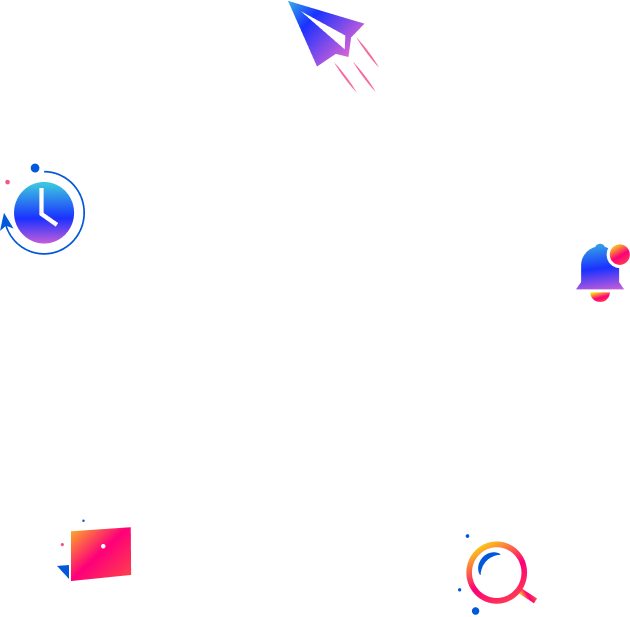

<span
  parallaxItem
  [top]="parallax_item.top"
  [left]="parallax_item.left"
  [rotate]="parallax_item.rotate"
  [inversion]="parallax_item.inversion"
  [opacity]="parallax_item.opacity"
  [movement]="parallax_item.movement"
  >
  
</span>
